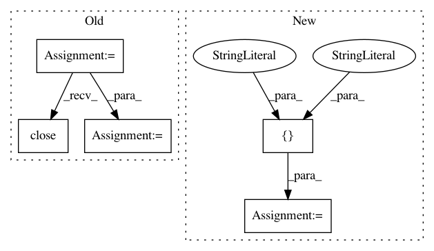

291c93ed820d042c35c8e544fc06868381439245,scipy/cluster/tests/test_hierarchy.py,TestDendrogram,test_dendrogram_plot,#TestDendrogram#,1442
Before Change
Z = linkage(_ytdist, "single")
fig = plt.figure()
ax = fig.add_subplot(111)
// test that dendrogram accepts ax keyword
R1 = dendrogram(Z, ax=ax)
plt.close()
// test plotting to gca (will import pylab)
R2 = dendrogram(Z)
plt.close()
def calculate_maximum_distances(Z):
// Used for testing correctness of maxdists.
After Change
@dec.skipif(not have_matplotlib)
def test_dendrogram_plot(self):
for orientation in ["top", "bottom", "left", "right"]:
yield self.check_dendrogram_plot, orientation
def check_dendrogram_plot(self, orientation):
// Tests dendrogram plotting.
Z = linkage(_ytdist, "single")
expected = {"color_list": ["g", "b", "b", "b", "b"],
In pattern: SUPERPATTERN
Frequency: 3
Non-data size: 5
Instances
Project Name: scipy/scipy
Commit Name: 291c93ed820d042c35c8e544fc06868381439245
Time: 2014-06-29
Author: cairj3@mail2.sysu.edu.cn
File Name: scipy/cluster/tests/test_hierarchy.py
Class Name: TestDendrogram
Method Name: test_dendrogram_plot
Project Name: SeldonIO/seldon-core
Commit Name: 9cdbed54fcb5ccab77166022a0799c163e2942ef
Time: 2020-04-14
Author: gsunner2000@gmail.com
File Name: release.py
Class Name:
Method Name: update_operator_values_yaml_file
Project Name: mne-tools/mne-python
Commit Name: 9aaa6636c3a508df1aa87c6a38d1a388b5de0b39
Time: 2018-09-14
Author: w.m.vanvliet@gmail.com
File Name: mne/report.py
Class Name: Report
Method Name: save